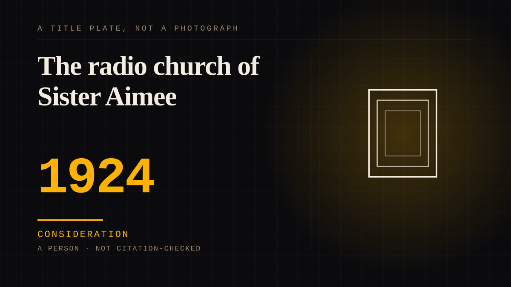

A person · 1924 · Radio
The radio church of Sister Aimee
Her church went on the air on 6 February 1924: KFSG - 'Kall Foursquare Gospel' - broadcasting at 500 watts from Angelus Temple, listener-supported one day at a time. She is credited by her own church as the first woman to preach a sermon on radio (1922), and after the first broadcast the letters came from other states and other countries, cataloguing where the signal had been heard.

A church built to be heard at a distance. Aimee Semple McPherson had preached on Los Angeles radio before owning a station, and her church's history credits her as the first woman to preach a sermon over the radio, on the Rockridge station in Oakland in April 1922. In February 1924 KFSG went on the air from Angelus Temple - a 500-watt Western Electric transmitter whose dedication named its reach, 'the people of the United States, Canada, Alaska, Mexico, Panama, Hawaii, South Sea Islands'. The congregation had raised the roughly $25,000 to build it.
The letters were the reply channel, and they were the audience. In the early 1920s a station learned who was listening from the mail: cards, telegrams and letters reporting where the signal was received. The record kept for KFSG includes letters from Illinois, Indiana, Pennsylvania and New Zealand describing when the broadcast was heard and what it meant - 'We do hope to hear you soon again', one wrote, and a listener in Indiana asked who the woman preacher had been. The station answered its mail through volunteer church members, and it was sponsored day by day by listeners through the Radio Missionary Society, with patrons booked months ahead.
The mechanism is a congregational 'you' at a distance. The church addressed the radio congregation as assembled even though the far end could not answer: in Angelus Temple the pastor asked 'Do you pledge to live clean Christian lives for God?' and the answer - 'We do' - came back from a room the radio listeners could not join. That is the presenter mechanism with a congregation in it: second-person grammar aimed at an unseen audience, engineered on a schedule. The competing placement, the idol, fails because the sermons were live and ongoing - an address from somebody who believed herself perceived, not a finished body of work. One honesty note is kept: the famous 'minions of Satan' telegram to Secretary Hoover over a wavelength dispute is recorded by radio historians as legend rather than fact, and KFSG was never actually taken off the air.
Consideration. The part where somebody stops and thinks. The research, the diagnosis, the ethics, the lawsuits, the regulators. Roughly fifty years of arguing with itself about whether this is a relationship.
Where it sits
1900 1900-1949 · 1924 1949
Provenance · 4 source record(s)
- unverifiedThe station as its history records it: the February 1924 dedication, the 500-watt Western Electric transmitter, the church's claim that she was the first woman to preach a sermon over the radio (the Rockridge station, KZY, in Oakland, April 1922), the reception letters from other states and from New Zealand, the Radio Missionary Society's day-by-day sponsorship, and the volunteer staff that answered the mail. Read through a search index rather than fetched, so the record is unverified: a reader can open this page, this agent did not.Radio Heritage Foundation, "KFSG Los Angeles - The Aimee Semple McPherson Station" (J. Hilliker) ↗
- unverifiedThe broadcast mechanism from inside the church: the congregation's 'Do you pledge... We do' exchange, the hundreds of thousands the broadcast reached in homes, the voluntary financing of the station's upkeep, and the shut-in and sunshine-hour programming. Read through a search index rather than fetched, so the record is unverified: a reader can open this page, this agent did not.International Church of the Foursquare Gospel resources, "Sister Aimee's astounding radio impact" (adapted from R. L. Power, Radio in the Home, January 1925) ↗
- unverifiedThe licence facts: KFSG first licensed in January 1924 to the Echo Park Evangelistic Association at 500 watts, the call letters standing for 'Kall Foursquare Gospel', and the non-commercial religious programming. Read through a search index rather than fetched, so the record is unverified: a reader can open this page, this agent did not.Wikipedia, "KFSG (Los Angeles)" ↗
- unverifiedThe caution on the 'minions of Satan' telegram to Secretary of Commerce Hoover: no period record of it exists, the Department of Commerce files show no action against KFSG, and the incident is recorded here as legend rather than fact. Read through a search index rather than fetched, so the record is unverified: a reader can open this page, this agent did not.The Radio Historian, "The alleged Hoover telegram" (J. Schneider) ↗
Not yet stood behind. The entry is real. A person has not read the citation and confirmed it, so treat the date as approximate until they do.
Connected · 2 out, 0 in
It sits in
The full timeline → · The database → · See it in the atlas →